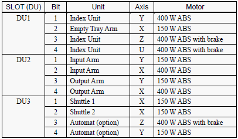
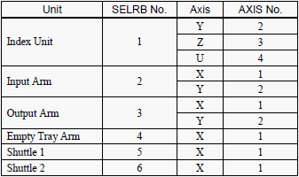

Service History
Subject: Operation Panel "Power ON" but MMI status display "Power OFF"
Handler Model: NS-7000(UTAC, NS70-50, S/N: 181048)
Controller: RC520
Date: 31 Jan 2008
Symptom
Operation Panel "Power ON" but MMI status display "Power OFF".
Action
Checked fuse, no open-circuit.
Suspect PC I/O (Contec) card failure and SPEL CT corrupted.
Swapped PC I/O card from another handler.
Uninstalled and reinstalled SPEL CT. MMI status display was normal.
Swapped back the original PC I/O card, no problem.
Previously handler's DU motor driver module burnt and SSR failure. Repaired by customer, however SPEL CT bottom right screen shows motor status “???” for all robots(from robot 1 to 6). Reset encoders for all robots. Calpls and Calib for all robots' axes.
Home from SPEL, found out Shuttle 2 encountered “Torque Error”, physically feel shuttle 2 motor no torque even with power connector is attached. Advised customer to change another motor. After changed, Calpls and Calib pulse 0 position again.
Home all motors, no problem.
Dry cycle run to verify pick and place position and backup system,setup files,all projects and pose data.
|
Dip switch to initialise encoder  |
Robot Number and Axis Number  |
Cause
MMI status for "Power" is wrong maybe due to corrupted MMI.
Motor driver module (servo driver) burnt and SSR failure.
SPEL CT bottom right screen shows motor status “???” for all robots(from robot 1 to 6)
Shuttle 2 motor spoilt.
Remarks
KM2 spoilt for NS7000 in power box unit can also cause same problem.